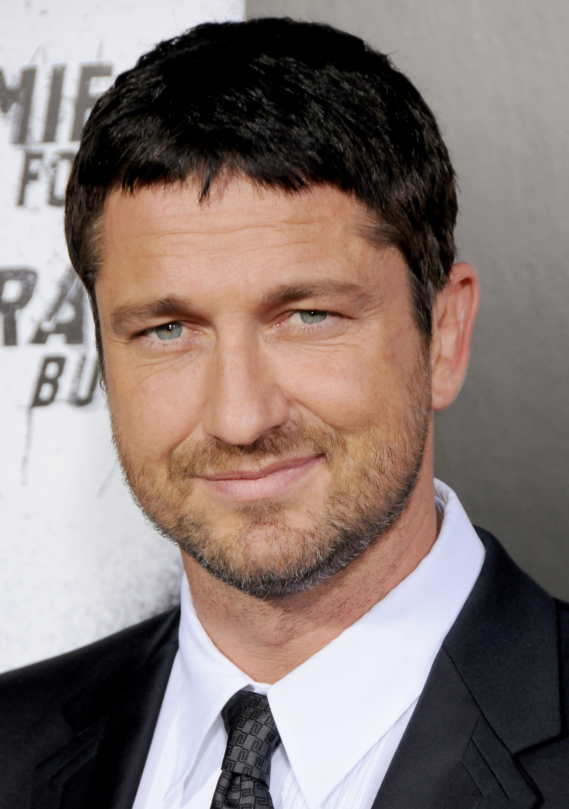

The Caesar

There's a reason so many guys, famous and otherwise, wore the Caesar cut in the nineties. The look gave men as diverse as George Clooney and Eminem a direct line to Julius Caesar himself, who's crowning achievement might just be a cut that was short all over with a noticeable bit of fringe at the top of the forehead.
